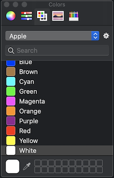

LittleFox
Version 1.5.14
LittleFox is a small tool designed to help people synthesis subtitle with music and video in an efficient way. It was designed to conveniently synthesis subtitle with audio and video without traditional boring works. It helps end user share music or video on social websites or make slideshows with speech audio and pictures in a simple and efficient way. With the help of it, you can burn your favourite mp3 to video with lyrics sheet in several minutes, make slideshows by merging pictures with speech audio, synchronise some words to an exists video, or just scale the resolution of your videos to slim them so that you can very easily share them with a very small file size.
Share music and video on social websites
LittleFox can produce very smaller video file than original mp3 or mp4 file so that the produced output file can be suitable to share on social websites, such as Twitter, Youtube, Vimeo, Netflix etc.
Synthesising Types
| Id | Input | Output |
|---|---|---|
| 1 | Audio + Subtitle | MP4 video |
| 2 | Audio + Pictures + Subtitle | MP4 video |
| 3 | Video + Subtitle | MP4 video |
| 4 | Video + Pictures + Subtitle | MP4 video |
Each synthesising type can put the subtitle in the bottom of the outside margin without video area overlay. Subtitle can be split into two type of content and each type of content can have different font and colour style, and can contains two lines of text, so the maximum number of line count in the external margin area is four lines of text.

If you can't open the link above, please launch App Store and found LittleFox by searching.
Screenshot


Audio
How to add subtitle to music on Mac?
How to turn my favourite mp3 to video with lyrics sheet?
The follow are the steps that how to synthesis music with lyrics sheet. Surely you can also synchronise speech audio with pictures using the same steps, this is an very conveniently approach to make slideshow with speech audio.
Step 1. Click to load lyrics sheet file, the app will parse the file line by line automatically. The lyrics sheet file can be easily generated by LyricsMaker, an efficient small tool designed to smoothly pair working with LittleFox.
What is the relation between LittleFox and LyricsMaker?
LyricsMaker designed to generate lyrics sheet but LittleFox designed to burn audio or video with lyrics sheet to movie. LittleFox just uses lyrics sheet as text format to know when words should be showing in the final movie.
Step 2. Right click any original line of the parsed lyrics then click the prompt menu item "Add Image" to load a image file for the selected line. The image file should be PNG or JPEG file format that always has a .png, .jpg or .jpeg extension name. You can click "Preview Image" to view a more bigger size of the loaded image and can click "Remove Image" to delete it if you don't want it. Add pictures to audio is optional, LittleFox can synthesis audio with lyrics sheet and output movie without any image loaded, so you can skip this step directly.
Step 3. Click to choose an audio file and then the app immediately ask you to select an output directory that the final output movie file will be placed there, the file has a same name with the audio file but with a .mp4 extension name.
Please ready your audio file with standard 44100 sample rate will be better. Open your audio file with Audacity, on its bottom left corner → Project Rate (Hz) make sure 44100 selected, and then export to mp3 or wav.
Sample Video Made From MP3
Video
How to add subtitle to video on Mac?
How to slim my videos so that I can share them on social websites easily?
The follow are the steps about how to synthesis video with lyrics sheet, of course the content can be anything you put in it.
Step 1. Same as the step 1 of the audio synthesis.
Step 2. Same as step 2 of the audio synthesis, but it's not necessary to add picture to movie in common situation, so this step is optional and you can directly skip this step. (Sometime, you may want add your logo in each frame of the output video).
Step 3. Click to choose a video file and then the app immediately ask you to select a directory that the final output movie file will be placed there, the file has a same name but plus a "+" symbol with the original file name, e.g. test.mp4 will be generated as test+.mp4.
Slim videos: You can sync a movie without lyrics words, it's useful, i.e. just resize the screen size of a video and generate a very small output movie.
Settings
Click to specify the default settings of the output movie file.
A. The screen width and height of the output movie, the supported range of them is from 100x60 to 1920x1080.
B. The position of the subtitle on the screen.
C. The font style of the subtitle, there are several combine of Bold(B), Italic(I) and Underline(U) of font style. There, R means regular font style and the number on the left side of Font button is the size of the font.
You can customise the colours for the subtitle font style:
. The Front colour of the subtitle.
. The Shadow colour of the subtitle.
. The Underline colour of the subtitle.
. The colour of screen background, this option is only effective for audio synthesis.
D. Click Reset button to restore all settings to defaults.
E. Click OK button to save all settings, your settings will be kept until the next time you changed it.
F. Click Cancel button to give up changing of settings.
Note: The colour of "Screen Background" is only available for audio synthesis or checked on the option, "At the bottom of outside margin without video area overlay", to place subtitle out side of the video area otherwise it will be set to transparent for video synthesis by default.
Warning:
1. Please ensure the time tag of the first line in the lyrics sheet file set to [00:00:00].
2. Please carefully check resolution of the output video before synchronise subtitle.
3. (Optional) You can copy the last line and set its time tag with the total long of the music or video file so that the last line will display until to the end of playing if the last line distance to the end is too long.
Tips
 1. You can directly input sample text into the "Sample Text Lines" box to replace the default one line or all.
1. You can directly input sample text into the "Sample Text Lines" box to replace the default one line or all.
2. Set transparent background of the output movie, or transparent shadow, please click the button on the right side of "Screen Background" or the button on the right side of "Shadow Colour", and then on the prompt panel select the colour "White".
What's new:
1. Subtitle placed at the bottom of outside margin without video area overlay.
Note:
. Please break long single line text into two lines or more to fit the width of the output video.
. You may needs to adjust the font size to make the text to fit into two lines, i.e, set a more smaller font size for a long text line.
2. Pair a translated line with an original line and display them simultaneously. The plussed extra line must begins with "&& " three character (two & symbol and a space), e.g:
The first line is the original line and the below line is a translated line, the two lines will be simultaneously displayed in the final video, and you can set its colour by apply the option
Note: You can also break one line of subtitle to two lines and the second line with a prefix "&& " so that the second line can be center aligned when the line of subtitle is too long.
Font for subtitle
Here's an extremely light style Japanese font which can display more clear Kanji characters on small screen.
You can download the file here: RyoGothicPlusN-ExtraLight.otf.
How to fetch the resolution of a video file?
1. QuickTime Player → Window → Show Movie Inspector.
2.
Prepare video or audio for LittleFox
→ There're some useful commands of FFmpeg that can be used to prepare video or audio for LittleFox.
Note: Sometime video file generated by iMovie can't be correctly recognised by LittleFox, please open it by QuickTime Player and export it to .mov file format and then prepare the exported file for LittleFox.
How to modify some special area on the video screen at an accurate time?
Extract the picture that has accurate time stamp and then apply the picture to that moment, or apply any other picture provided by yourself. With the help of such operation, you can cover a special area that you don't want it be visible or apply some attached information on that screen or replace screen picture at that moment.
References
 LyricsMaker, a small util designed to make lyrics sheet for audio or video and can pair working with LittleFox seamlessly.
LyricsMaker, a small util designed to make lyrics sheet for audio or video and can pair working with LittleFox seamlessly. Personal FTP Server, a small util developed to translate files between iOS device and Mac simple and easy.
Personal FTP Server, a small util developed to translate files between iOS device and Mac simple and easy.- Audacity, an excellent cross-platform audio editor that can help you manipulate and convert plenty of audio formats.
Video Samples
となりのトトロ (My Neighbor Totoro), 1988.
もののけ姫 (Princess Mononoke) , 1997.
"Arrietty's Song" come from the respected film 借りぐらしのアリエッティ (The Secret World of Arrietty) , 2010.
めぐる季節 come from the respected film 魔女の宅急便 (Kiki's Delivery Service) , 1989.
The above four music video were come from the respected Japanese animated fantasy films and all of them directed by respected Mr. 宮崎駿 (Miyazaki Hayao), and animated by respected Studio Ghibli. All music except "Arrietty's Song" were written by respected Mr. 久石譲 (Joe Hisaishi). They're made by LyricsMaker and LittleFox, and located here: https://github.com/chengdu/LittleFox. More video samples placed there with style samples as a reference. You can take a look there and then got the answer of such questions, "How to turn my favourite mp3 to video with lyrics sheet?", "How can I burn lyrics words into video?". You can produce music video that like karaoke video but without the traditional subtitle editor's boring works now.
My Video Now!